# For data handling
import os
import pandas as pd
import numpy as np
import sys
# For clustering
from sklearn.cluster import KMeans
from sklearn.preprocessing import StandardScaler
# For visualization
import matplotlib.pyplot as plt
import seaborn as sns
from sklearn.decomposition import PCAdata_folder = "../data"
# Load individual season data
wnba_2022 = pd.read_csv(os.path.join(data_folder, "wnba_2022.csv"))
wnba_2023 = pd.read_csv(os.path.join(data_folder, "wnba_2023.csv"))
wnba_2024 = pd.read_csv(os.path.join(data_folder, "wnba_2024.csv"))
# Combine all seasons into one dataset
wnba_data = pd.concat([wnba_2022, wnba_2023, wnba_2024], ignore_index=True)
# Add a year column for Time Actual that's in format ISO8601
wnba_data['timeActual'] = pd.to_datetime(wnba_data['timeActual'], format='ISO8601')
# Ensure 'timeActual' is in datetime format
wnba_data['year'] = wnba_data['timeActual'].dt.year
# Display basic information about the dataset
print(f"Total records across all seasons: {len(wnba_data):,}")
print(f"Columns in dataset: {wnba_data.shape[1]}")
print(f"Dataset shape: {wnba_data.shape}")
print("\nDataset columns:")
print(wnba_data.columns.tolist())Total records across all seasons: 28,103
Columns in dataset: 58
Dataset shape: (28103, 58)
Dataset columns:
['actionNumber', 'clock', 'timeActual', 'period', 'periodType', 'actionType', 'subType', 'qualifiers', 'personId', 'x', 'y', 'possession', 'scoreHome', 'scoreAway', 'edited', 'orderNumber', 'xLegacy', 'yLegacy', 'isFieldGoal', 'side', 'description', 'personIdsFilter', 'teamId', 'teamTricode', 'descriptor', 'jumpBallRecoveredName', 'jumpBallRecoverdPersonId', 'playerName', 'playerNameI', 'jumpBallWonPlayerName', 'jumpBallWonPersonId', 'jumpBallLostPlayerName', 'jumpBallLostPersonId', 'shotDistance', 'shotResult', 'shotActionNumber', 'reboundTotal', 'reboundDefensiveTotal', 'reboundOffensiveTotal', 'pointsTotal', 'assistPlayerNameInitial', 'assistPersonId', 'assistTotal', 'turnoverTotal', 'stealPlayerName', 'stealPersonId', 'officialId', 'foulPersonalTotal', 'foulTechnicalTotal', 'foulDrawnPlayerName', 'foulDrawnPersonId', 'blockPlayerName', 'blockPersonId', 'gameId', 'isTargetScoreLastPeriod', 'area', 'areaDetail', 'year']
# -------------------- Game Metadata Analysis
print("\n1. Summary of the Game Data:")
print(f"Number of games: {wnba_data['gameId'].nunique()}")
# Convert timeActual to datetime with proper format handling
wnba_data['timeActual'] = pd.to_datetime(wnba_data['timeActual'], format='ISO8601')
min_date = wnba_data['timeActual'].min().strftime('%B %Y')
max_date = wnba_data['timeActual'].max().strftime('%B %Y')
print(f"Date range: {min_date} to {max_date}")
print(f"Number of teams: {wnba_data['teamTricode'].nunique()}")
print("Teams:", sorted(wnba_data['teamTricode'].dropna().unique()))
#-------------------- Referee Assignment Analysis
print("\n2. Summary of the Referee Assignments:")
referee_data = wnba_data[wnba_data['officialId'].notnull()]
# Calculate the count of how many games have referee data
games_with_referee_data = referee_data['gameId'].nunique()
total_games = wnba_data['gameId'].nunique()
print(f"Games with referee data: {games_with_referee_data} out of {total_games} total games ({games_with_referee_data/total_games*100:.1f}%)")
print(f"Records with referee data: {len(referee_data):,} ({len(referee_data)/len(wnba_data)*100:.1f}%)")
print(f"Unique referees: {referee_data['officialId'].nunique()}")
# Referee assignments per game
referee_assignments = referee_data.groupby('gameId')['officialId'].nunique().reset_index()
referee_assignments.columns = ['gameId', 'num_referees']
print(f"Average referees per game: {referee_assignments['num_referees'].mean():.2f}")
# Most active referees based on unique gameids
top_referees = referee_data.groupby('officialId')['gameId'].nunique().sort_values(ascending=False).head(10)
print(f"\nTop 10 Most Active Referees (by unique games):")
print(top_referees)
# Visualize of all referees by number of unique games
all_referees = referee_data.groupby('officialId')['gameId'].nunique().sort_values(ascending=False)
all_referees.index = all_referees.index.astype(str)
plt.figure(figsize=(10, 6))
sns.barplot(
x=all_referees.index,
y=all_referees.values
)
plt.xticks(rotation=45, ha='right')
plt.title('Count of Unique Games per Referee', fontsize=14, fontweight='bold')
plt.xlabel('Referee ID')
plt.ylabel('Number of Unique Games')
plt.tight_layout()
plt.show()
# -------------------- Game Outcomes Analysis
games_summary = wnba_data.groupby('gameId').agg({
'scoreHome': 'max',
'scoreAway': 'max',
'teamTricode': 'nunique',
'year': 'first'
}).reset_index()
games_summary['point_differential'] = games_summary['scoreHome'] - games_summary['scoreAway']
games_summary['home_win'] = games_summary['point_differential'] > 0
# Analyzing by year the game outcomes
yearly_outcomes = games_summary.groupby('year').agg({
'gameId': 'count',
'home_win': ['sum', 'mean'],
'point_differential': 'mean'
}).round(0)
print("\nOutcomes by Season:")
for year in yearly_outcomes.index:
games_count = yearly_outcomes.loc[year, ('gameId', 'count')]
home_wins = yearly_outcomes.loc[year, ('home_win', 'sum')]
home_win_pct = yearly_outcomes.loc[year, ('home_win', 'mean')] * 100
avg_diff = yearly_outcomes.loc[year, ('point_differential', 'mean')]
print(f"{int(year)}: {int(games_count)} games, {int(home_wins)} home wins , average point difference: {int(avg_diff)}")
#-------------------- Missing Values Analysis
print("\nMissing Values Analysis:")
# Summarize the missing vaules for referee actions
# Key variables for referee analysis
key_variables = ['gameId', 'officialId', 'teamTricode', 'foulPersonalTotal',
'scoreHome', 'scoreAway', 'timeActual', 'period']
# Missing values within actionType calls
actiontype_total = wnba_data.groupby('actionType')['officialId'].size().reset_index(name='total_count')
actiontype_with_ref = wnba_data[wnba_data['officialId'].notnull()].groupby('actionType')['officialId'].count().reset_index(name='referee_count')
actiontype_counts = pd.merge(actiontype_total, actiontype_with_ref, on='actionType', how='left').fillna(0)
actiontype_counts['percent_missing'] = ((actiontype_counts['total_count'] - actiontype_counts['referee_count']) / actiontype_counts['total_count'] * 100).round(1)
actiontype_counts = actiontype_counts.sort_values('percent_missing', ascending=False).set_index('actionType')
print(actiontype_counts[['total_count', 'referee_count', 'percent_missing']])
# Visualize missing values
plt.figure(figsize=(10,6))
sns.barplot(
x=actiontype_counts.index,
y=actiontype_counts['percent_missing'])
plt.xticks(rotation=75, ha='right')
plt.title('Referee ID Missingness by ActionType', fontsize=14, fontweight='bold')
plt.xlabel('ActionType')
plt.ylabel('Percent Missing (%)')
plt.ylim(0, 105)
plt.tight_layout()
plt.show()
# Visualize missing referee ID values for different subtypes within actionType = 'Turnover'
turnover_data = wnba_data[wnba_data['actionType'] == 'turnover']
subtype_total = turnover_data.groupby('subType')['officialId'].size().reset_index(name='total_count')
subtype_with_ref = turnover_data[turnover_data['officialId'].notnull()].groupby('subType')['officialId'].count().reset_index(name='referee_count')
subtype_counts = pd.merge(subtype_total, subtype_with_ref, on='subType', how='left').fillna(0)
subtype_counts['percent_missing'] = ((subtype_counts['total_count'] - subtype_counts['referee_count']) / subtype_counts['total_count'] * 100).round(1)
subtype_counts = subtype_counts.sort_values('percent_missing', ascending=False).set_index('subType')
print("\nMissing Referee ID Values for Turnover Subtypes:")
print(subtype_counts[['total_count', 'referee_count', 'percent_missing']])
# Visualize missing values
plt.figure(figsize=(10,6))
sns.barplot(
x=subtype_counts.index,
y=subtype_counts['percent_missing'])
plt.xticks(rotation=75, ha='right')
plt.title('Referee ID Missingness by ActionType', fontsize=14, fontweight='bold')
plt.xlabel('ActionType')
plt.ylabel('Percent Missing (%)')
plt.ylim(0, 105)
plt.tight_layout()
plt.show()
1. Summary of the Game Data:
Number of games: 65
Date range: August 2022 to October 2024
Number of teams: 11
Teams: ['ATL', 'CHI', 'CON', 'DAL', 'IND', 'LVA', 'MIN', 'NYL', 'PHO', 'SEA', 'WAS']
2. Summary of the Referee Assignments:
Games with referee data: 65 out of 65 total games (100.0%)
Records with referee data: 2,793 (9.9%)
Unique referees: 27
Average referees per game: 3.05
Top 10 Most Active Referees (by unique games):
officialId
100697.0 20
201538.0 20
100274.0 19
203440.0 18
202297.0 17
203800.0 16
1628702.0 14
203891.0 8
101044.0 8
1628167.0 8
Name: gameId, dtype: int64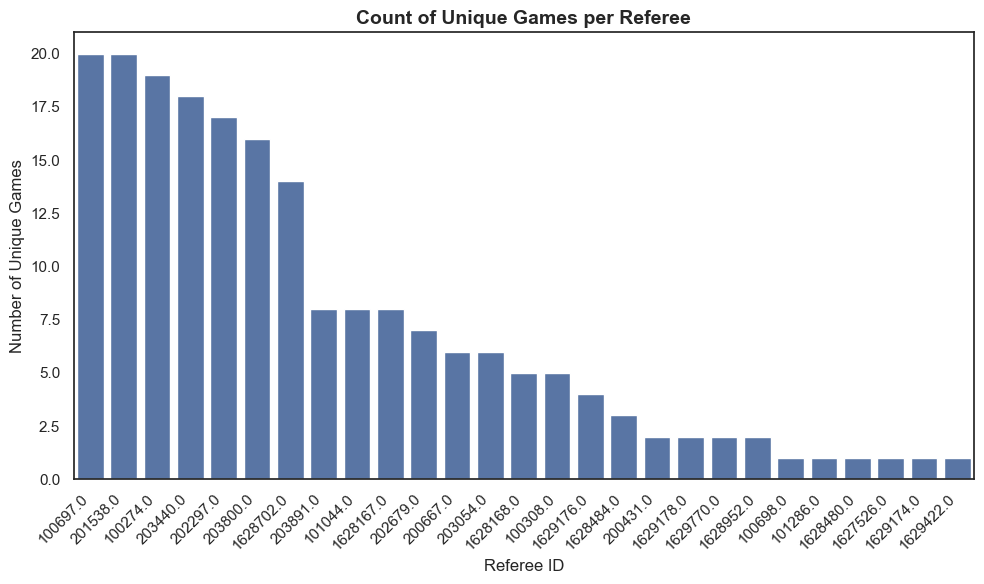
Outcomes by Season:
2022: 23 games, 12 home wins , average point difference: 5
2023: 20 games, 13 home wins , average point difference: 9
2024: 22 games, 17 home wins , average point difference: 6
Missing Values Analysis:
total_count referee_count percent_missing
actionType
2pt 6022 0.0 100.0
3pt 2940 0.0 100.0
block 566 0.0 100.0
freethrow 2044 0.0 100.0
game 65 0.0 100.0
jumpball 191 0.0 100.0
substitution 5070 0.0 100.0
period 528 0.0 100.0
rebound 5416 0.0 100.0
steal 876 0.0 100.0
timeout 664 0.0 100.0
turnover 1631 711.0 56.4
violation 87 80.0 8.0
foul 2003 2002.0 0.0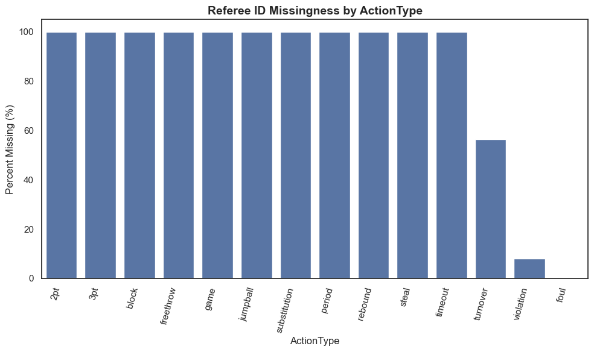
Missing Referee ID Values for Turnover Subtypes:
total_count referee_count percent_missing
subType
bad pass 582 0.0 100.0
jumpball violation 2 0.0 100.0
offensive-kicked-ball 1 0.0 100.0
lost ball 305 4.0 98.7
3-second-violation 17 14.0 17.6
backcourt 9 8.0 11.1
shot clock 129 115.0 10.9
out-of-bounds 337 322.0 4.5
traveling 96 95.0 1.0
5-second-violation 2 2.0 0.0
double dribble 2 2.0 0.0
8-second-violation 2 2.0 0.0
offensive foul 142 142.0 0.0
inbound 1 1.0 0.0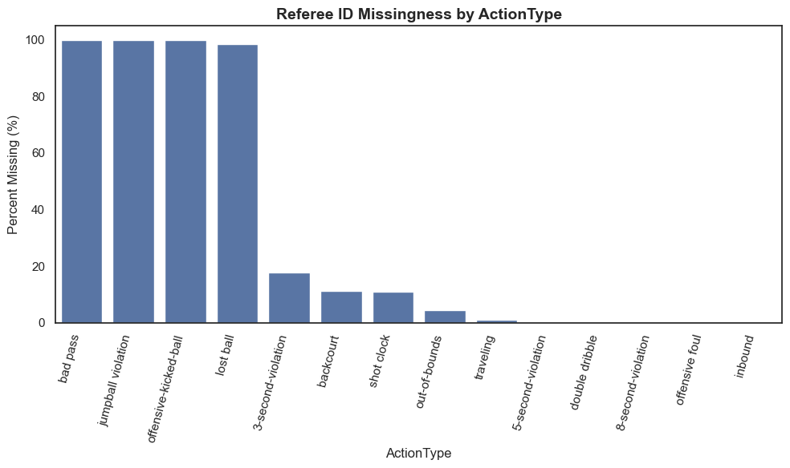
#### Data Cleaning and Preparation for Referee-level event counts from raw play-by-play
import re
import numpy as np
import pandas as pd
# =========================
# Build home/away mapping
# =========================
wnba_data = wnba_data.copy()
wnba_data['scoreHome_num'] = pd.to_numeric(wnba_data.get('scoreHome'), errors='coerce')
wnba_data['scoreAway_num'] = pd.to_numeric(wnba_data.get('scoreAway'), errors='coerce')
wnba_data = wnba_data.sort_values(['gameId','period','timeActual'], kind='mergesort')
wnba_data['home_diff'] = wnba_data.groupby('gameId')['scoreHome_num'].diff()
wnba_data['away_diff'] = wnba_data.groupby('gameId')['scoreAway_num'].diff()
first_home = (
wnba_data[wnba_data['home_diff'] > 0]
.groupby('gameId', as_index=False)
.agg(home_tricode=('teamTricode','first'))
)
first_away = (
wnba_data[wnba_data['away_diff'] > 0]
.groupby('gameId', as_index=False)
.agg(away_tricode=('teamTricode','first'))
)
ha_map = pd.merge(first_home, first_away, on='gameId', how='outer')
df = wnba_data.merge(ha_map, on='gameId', how='left')
df['is_home'] = (df['teamTricode'] == df['home_tricode']).astype(int)
df['is_away'] = (df['teamTricode'] == df['away_tricode']).astype(int)
df['away_game'] = (df['is_away'] == 1).astype(int)
# Referee-level event table
ref_events = wnba_data[wnba_data['officialId'].notna()].copy()
#-- assign each unique referee ID a unique alphabet label
def ref_label(idx):
return f"Ref {chr(65 + idx)}"
# Mapping from officialId based on sorted unique IDs
unique_ref_ids = sorted(ref_events['officialId'].dropna().unique())
ref_id_to_label = {ref_id: ref_label(i) for i, ref_id in enumerate(unique_ref_ids)}
for col in ['actionType', 'subType', 'teamTricode']:
if col in ref_events.columns:
ref_events[col] = ref_events[col].astype(str).str.strip().str.lower().replace({'nan': np.nan})
ref_events['teamTricode'] = ref_events['teamTricode'].fillna('unknown')
home_away_map = df[['gameId','teamTricode','is_home','is_away','away_game']].drop_duplicates()
ref_events = ref_events.merge(home_away_map, on=['gameId','teamTricode'], how='left')
ref_events['team_status'] = np.where(ref_events['is_home'] == 1, 'home',
np.where(ref_events['is_away'] == 1, 'away', 'unknown'))
# --- Assign global ref_label ---
ref_events['ref_label'] = ref_events['officialId'].map(ref_id_to_label)
# --- Base counts per (game, ref, teamTricode, team_status)
ref_event_counts = (
ref_events.groupby(['gameId','officialId','ref_label','teamTricode','team_status'])
.agg(
fouls_made=('actionType', lambda x: (x == 'foul').sum()),
turnovers_made=('actionType', lambda x: (x == 'turnover').sum())
)
.reset_index()
)
# --- Per-subtype counts (pivot wide by subtype) — include team_status in keys
subtype_counts = (
ref_events.groupby(['gameId','officialId','ref_label','teamTricode','team_status','subType'])
.size()
.unstack(fill_value=0)
.reset_index()
)
key_cols = ['gameId','officialId','ref_label','teamTricode','team_status']
sub_cols = [c for c in subtype_counts.columns if c not in key_cols]
subtype_counts = subtype_counts.rename(columns={c: f"st_{str(c)}" for c in sub_cols})
referee_game_data = ref_event_counts.merge(
subtype_counts,
on=['gameId','officialId','ref_label','teamTricode','team_status'],
how='left'
)
count_cols = ['fouls_made','turnovers_made'] + [c for c in referee_game_data.columns if c.startswith('st_')]
referee_game_data[count_cols] = referee_game_data[count_cols].fillna(0).astype(int)
print(f"\nReferee-game dataset shape: {referee_game_data.shape}")
print(f"Unique referees: {referee_game_data['officialId'].nunique()}")
print(f"Referee-game records: {len(referee_game_data)}")
sample_cols = ['gameId','officialId','ref_label','teamTricode','team_status','fouls_made','turnovers_made']
if 'st_traveling' in referee_game_data.columns:
sample_cols.append('st_traveling')
print("\nSample of Referee-game dataset:")
print(referee_game_data[sample_cols].head(5))
Referee-game dataset shape: (394, 24)
Unique referees: 27
Referee-game records: 394
Sample of Referee-game dataset:
gameId officialId ref_label teamTricode team_status fouls_made \
0 1042200101 100274.0 Ref A lva unknown 5
1 1042200101 100274.0 Ref A pho unknown 3
2 1042200101 101044.0 Ref E lva unknown 7
3 1042200101 101044.0 Ref E pho unknown 7
4 1042200101 1628167.0 Ref Q lva unknown 6
turnovers_made st_traveling
0 3 1
1 1 0
2 4 0
3 2 0
4 2 0 import os
import pandas as pd
import numpy as np
# --- normalize text fields
for c in ['actionType','subType','teamTricode']:
if c in wnba_data.columns:
wnba_data[c] = wnba_data[c].astype(str).str.lower().replace('nan', np.nan)
# --- coerce scores to numeric
wnba_data['scoreHome_num'] = pd.to_numeric(wnba_data['scoreHome'], errors='coerce')
wnba_data['scoreAway_num'] = pd.to_numeric(wnba_data['scoreAway'], errors='coerce')
# --- sort for correct order
wnba_data = wnba_data.sort_values(['gameId','period','timeActual'], kind='mergesort')
# --- detect scoreboard increments
wnba_data['home_diff'] = wnba_data.groupby('gameId')['scoreHome_num'].diff()
wnba_data['away_diff'] = wnba_data.groupby('gameId')['scoreAway_num'].diff()
# --- first scoring teams = home/away
first_home = (
wnba_data[wnba_data['home_diff'] > 0]
.groupby('gameId', as_index=False)
.agg(home_tricode=('teamTricode','first'))
)
first_away = (
wnba_data[wnba_data['away_diff'] > 0]
.groupby('gameId', as_index=False)
.agg(away_tricode=('teamTricode','first'))
)
ha_map = pd.merge(first_home, first_away, on='gameId', how='outer')
# --- merge mapping back
df = wnba_data.merge(ha_map, on='gameId', how='left')
df['is_home'] = (df['teamTricode'] == df['home_tricode']).astype(int)
df['is_away'] = (df['teamTricode'] == df['away_tricode']).astype(int)
# --- turnover types that involve whistles
turnover_keep = {
'3-second-violation','backcourt','shot clock','out-of-bounds',
'traveling','5-second-violation','double dribble','8-second-violation',
'offensive foul','inbound'
}
# --- keep fouls + selected turnovers
mask_foul = df['actionType'] == 'foul'
mask_to = (df['actionType'] == 'turnover') & df['subType'].isin(turnover_keep)
df = df[mask_foul | mask_to].copy()
# --- basic foul + turnover counts
df['foul_count'] = (df['actionType'] == 'foul').astype(int)
df['turnover_whistle'] = (df['actionType'] == 'turnover').astype(int)
# --- split by home/away
df['foul_count_home'] = df['foul_count'] * df['is_home']
df['foul_count_away'] = df['foul_count'] * df['is_away']
df['turnover_whistle_home'] = df['turnover_whistle'] * df['is_home']
df['turnover_whistle_away'] = df['turnover_whistle'] * df['is_away']
# GLOBAL REF LABEL MAPPING
unique_ref_ids = sorted(df['officialId'].dropna().unique())
ref_id_to_label = {ref_id: f"Ref {chr(65+i)}" for i, ref_id in enumerate(unique_ref_ids)}
# Per-game crew label string using global mapping
def crew_label_str(official_ids):
ids = [oid for oid in sorted(set(official_ids)) if pd.notna(oid)]
return ', '.join([ref_id_to_label[oid] for oid in ids])
crew_map = (
df.groupby('gameId')['officialId']
.apply(lambda s: sorted(set(s.dropna())))
.reset_index(name='official_ids')
)
crew_map['crew_combo'] = crew_map['official_ids'].apply(crew_label_str)
crew_map = crew_map[['gameId','crew_combo']]
# Attach each event’s ref_label using the global mapping
df['ref_label'] = df['officialId'].map(ref_id_to_label)
# INDIVIDUAL (per ref per game) aggregates
referee_game_data = (
df.groupby(['gameId','officialId','ref_label','teamTricode'])
.agg(
fouls_made=('foul_count','sum'),
turnovers_made=('turnover_whistle','sum'),
fouls_home=('foul_count_home','sum'),
fouls_away=('foul_count_away','sum'),
to_home=('turnover_whistle_home','sum'),
to_away=('turnover_whistle_away','sum')
)
.reset_index()
)
# CREW (per game) aggregates
games_with_refs = (
df.groupby('gameId')
.agg(
official_crew=('officialId', lambda x: sorted(set(x.dropna()))),
foul_count=('foul_count','sum'),
foul_count_home=('foul_count_home','sum'),
foul_count_away=('foul_count_away','sum'),
turnover_whistle=('turnover_whistle','sum'),
turnover_whistle_home=('turnover_whistle_home','sum'),
turnover_whistle_away=('turnover_whistle_away','sum'),
scoreHome=('scoreHome_num','max'),
scoreAway=('scoreAway_num','max')
)
.reset_index()
)
# Apply the global crew label string
games_with_refs = games_with_refs.merge(crew_map, on='gameId', how='left')
games_with_refs['crew_size'] = games_with_refs['official_crew'].apply(lambda ids: len(set(ids)))
games_with_refs['point_diff_home'] = games_with_refs['scoreHome'] - games_with_refs['scoreAway']
games_with_refs['home_win'] = (games_with_refs['point_diff_home'] > 0).astype(int)
games_with_refs['away_game'] = (games_with_refs['home_win'] == 0).astype(int)
games_with_refs.to_csv(os.path.join(data_folder, 'games_with_refs.csv'), index=False)import pandas as pd
import numpy as np
import seaborn as sns
import matplotlib.pyplot as plt
sns.set_theme(style="white")
# 1) REFEREE-LEVEL DIFFERENCES (by ref_label)
# Ensure a label exists
if "ref_label" not in referee_game_data.columns:
referee_game_data["ref_label"] = referee_game_data["officialId"].astype(str)
have_split = all(c in referee_game_data.columns for c in ["fouls_home","fouls_away","to_home","to_away"])
if have_split:
# Collapse to one row per (gameId, ref_label) if data are split by team
cols_to_sum = ["fouls_home","fouls_away","to_home","to_away"]
ref_game = (referee_game_data
.groupby(["gameId","ref_label"], as_index=False)[cols_to_sum].sum())
ref_game["foul_diff_game"] = ref_game["fouls_away"] - ref_game["fouls_home"]
ref_game["to_diff_game"] = ref_game["to_away"] - ref_game["to_home"]
else:
# Derive splits from team role column if needed
role_col = "team_status" if "team_status" in referee_game_data.columns else (
"team_role" if "team_role" in referee_game_data.columns else None)
if role_col is None:
raise ValueError("Need split cols (fouls_home/away,to_home/away) OR a role column (team_status/team_role).")
tmp = referee_game_data[["gameId","ref_label",role_col,"fouls_made","turnovers_made"]].copy()
pvt = tmp.pivot_table(index=["gameId","ref_label"],
columns=role_col,
values=["fouls_made","turnovers_made"],
aggfunc="sum",
fill_value=0)
home_fouls = pvt[("fouls_made","home")] if ("fouls_made","home") in pvt.columns else 0
away_fouls = pvt[("fouls_made","away")] if ("fouls_made","away") in pvt.columns else 0
home_to = pvt[("turnovers_made","home")] if ("turnovers_made","home") in pvt.columns else 0
away_to = pvt[("turnovers_made","away")] if ("turnovers_made","away") in pvt.columns else 0
ref_game = pvt.reset_index()
ref_game["foul_diff_game"] = np.array(away_fouls) - np.array(home_fouls)
ref_game["to_diff_game"] = np.array(away_to) - np.array(home_to)
# Average per ref_label
ref_summary = (ref_game
.groupby("ref_label", as_index=False)
.agg(
avg_foul_diff_away_home=("foul_diff_game","mean"),
avg_turnover_diff_away_home=("to_diff_game","mean"),
games_officiated=("gameId","nunique")
))
# Orders for the two referee plots
ref_sorted_foul = ref_summary.sort_values("avg_foul_diff_away_home", ascending=False)
order_refs_foul = ref_sorted_foul["ref_label"].tolist()
ref_sorted_to = ref_summary.sort_values("avg_turnover_diff_away_home", ascending=False)
order_refs_to = ref_sorted_to["ref_label"].tolist()
# 2) CREW-LEVEL DIFFERENCES
crew_name_col = "crew_combo" if "crew_combo" in games_with_refs.columns else (
"crew_str" if "crew_str" in games_with_refs.columns else None)
if crew_name_col is None:
games_with_refs["crew_str"] = games_with_refs["official_crew"].apply(
lambda ids: ", ".join(map(str, sorted(ids))) if isinstance(ids, (list,tuple)) else str(ids)
)
crew_name_col = "crew_str"
crew_df = games_with_refs.copy()
crew_df["crew_foul_diff_game"] = crew_df["foul_count_away"] - crew_df["foul_count_home"]
crew_df["crew_to_diff_game"] = crew_df["turnover_whistle_away"] - crew_df["turnover_whistle_home"]
crew_summary = (crew_df.groupby(crew_name_col, as_index=False)
.agg(
avg_foul_diff_per_game=("crew_foul_diff_game","mean"),
avg_to_diff_per_game=("crew_to_diff_game","mean"),
games_officiated=("gameId","nunique")
))
crew_sorted_foul = crew_summary.sort_values("avg_foul_diff_per_game", ascending=False)
order_crews_foul = crew_sorted_foul[crew_name_col].tolist()
crew_sorted_to = crew_summary.sort_values("avg_to_diff_per_game", ascending=False)
order_crews_to = crew_sorted_to[crew_name_col].tolist()
# Add new calculations to the dataframes
# For referee-level: add total fouls and turnovers per game, plus home/away ratios
ref_game["total_fouls"] = ref_game["fouls_home"] + ref_game["fouls_away"]
ref_game["total_turnovers"] = ref_game["to_home"] + ref_game["to_away"]
ref_game["foul_home_ratio"] = ref_game["fouls_home"] / (ref_game["total_fouls"] + 1e-6)
ref_game["foul_away_ratio"] = ref_game["fouls_away"] / (ref_game["total_fouls"] + 1e-6)
ref_game["to_home_ratio"] = ref_game["to_home"] / (ref_game["total_turnovers"] + 1e-6)
ref_game["to_away_ratio"] = ref_game["to_away"] / (ref_game["total_turnovers"] + 1e-6)
ref_summary = (ref_game
.groupby("ref_label", as_index=False)
.agg(
avg_foul_diff_away_home=("foul_diff_game","mean"),
avg_turnover_diff_away_home=("to_diff_game","mean"),
games_officiated=("gameId","nunique"),
avg_total_fouls=("total_fouls","mean"),
avg_total_turnovers=("total_turnovers","mean"),
avg_foul_home_ratio=("foul_home_ratio","mean"),
avg_foul_away_ratio=("foul_away_ratio","mean"),
avg_to_home_ratio=("to_home_ratio","mean"),
avg_to_away_ratio=("to_away_ratio","mean")
))
# For crew-level: add total fouls and turnovers per game, plus home/away ratios
crew_df["crew_total_fouls"] = crew_df["foul_count_home"] + crew_df["foul_count_away"]
crew_df["crew_total_turnovers"] = crew_df["turnover_whistle_home"] + crew_df["turnover_whistle_away"]
crew_df["crew_foul_home_ratio"] = crew_df["foul_count_home"] / (crew_df["crew_total_fouls"] + 1e-6)
crew_df["crew_foul_away_ratio"] = crew_df["foul_count_away"] / (crew_df["crew_total_fouls"] + 1e-6)
crew_df["crew_to_home_ratio"] = crew_df["turnover_whistle_home"] / (crew_df["crew_total_turnovers"] + 1e-6)
crew_df["crew_to_away_ratio"] = crew_df["turnover_whistle_away"] / (crew_df["crew_total_turnovers"] + 1e-6)
crew_summary = (crew_df.groupby(crew_name_col, as_index=False)
.agg(
avg_foul_diff_per_game=("crew_foul_diff_game","mean"),
avg_to_diff_per_game=("crew_to_diff_game","mean"),
games_officiated=("gameId","nunique"),
avg_total_fouls=("crew_total_fouls","mean"),
avg_total_turnovers=("crew_total_turnovers","mean"),
avg_foul_home_ratio=("crew_foul_home_ratio","mean"),
avg_foul_away_ratio=("crew_foul_away_ratio","mean"),
avg_to_home_ratio=("crew_to_home_ratio","mean"),
avg_to_away_ratio=("crew_to_away_ratio","mean")
))
def add_bar_labels(ax, fmt="{:.1f}"):
for p in ax.patches:
val = p.get_height()
if val != 0:
ax.annotate(fmt.format(val),
(p.get_x() + p.get_width() / 2, val),
ha='center', va='bottom', fontsize=11, xytext=(0, 3),
textcoords='offset points')
# --- Referee plots ---
# (A) Refs: Avg Foul Diff (Away − Home) — sorted DESC (vertical)
plt.figure(figsize=(9, 8))
ax1 = sns.barplot(data=ref_sorted_foul, x="ref_label", y="avg_foul_diff_away_home", order=order_refs_foul)
ax1.axhline(0, lw=1, color="gray")
ax1.set_title("Referees — Avg Foul Difference (Away − Home) per Game", fontsize=16, pad=12)
ax1.set_xlabel("Referee", fontsize=14)
ax1.set_ylabel("Avg Foul Diff (Away − Home)", fontsize=14)
ax1.tick_params(axis="x", rotation=90, labelsize=11)
add_bar_labels(ax1)
plt.tight_layout()
plt.show()
# (B) Refs: Avg Whistle TO Diff (Away − Home) — sorted DESC (vertical)
plt.figure(figsize=(9, 8))
ax2 = sns.barplot(data=ref_sorted_to, x="ref_label", y="avg_turnover_diff_away_home", order=order_refs_to)
ax2.axhline(0, lw=1, color="gray")
ax2.set_title("Referees — Avg Whistle Turnover Difference (Away − Home) per Game", fontsize=16, pad=12)
ax2.set_xlabel("Referee", fontsize=14)
ax2.set_ylabel("Avg TO Diff (Away − Home)", fontsize=14)
ax2.tick_params(axis="x", rotation=90, labelsize=11)
add_bar_labels(ax2)
plt.tight_layout()
plt.show()
# --- Crew plots ---
# Crews: Avg Foul Diff — ALL crews
plt.figure(figsize=(9, 8))
ax3 = sns.barplot(data=crew_sorted_foul, x=crew_name_col, y="avg_foul_diff_per_game", order=order_crews_foul)
ax3.axhline(0, lw=1, color="gray")
ax3.set_title("Crews — Avg Foul Difference (Away − Home) per Game", fontsize=16, pad=12)
ax3.set_xlabel("Crew", fontsize=14)
ax3.set_ylabel("Avg Foul Diff (Away − Home)", fontsize=14)
ax3.tick_params(axis="x", rotation=90, labelsize=10)
ax3.margins(x=0.01)
add_bar_labels(ax3)
plt.tight_layout()
plt.show()
# Crews: Avg Whistle TO Diff — ALL crews
plt.figure(figsize=(9, 8))
ax4 = sns.barplot(data=crew_sorted_to, x=crew_name_col, y="avg_to_diff_per_game", order=order_crews_to)
ax4.axhline(0, lw=1, color="gray")
ax4.set_title("Crews — Avg Whistle Turnover Difference (Away − Home) per Game", fontsize=16, pad=12)
ax4.set_xlabel("Crew", fontsize=14)
ax4.set_ylabel("Avg TO Diff (Away − Home)", fontsize=14)
ax4.tick_params(axis="x", rotation=90, labelsize=10)
ax4.margins(x=0.01)
add_bar_labels(ax4)
plt.tight_layout()
plt.show()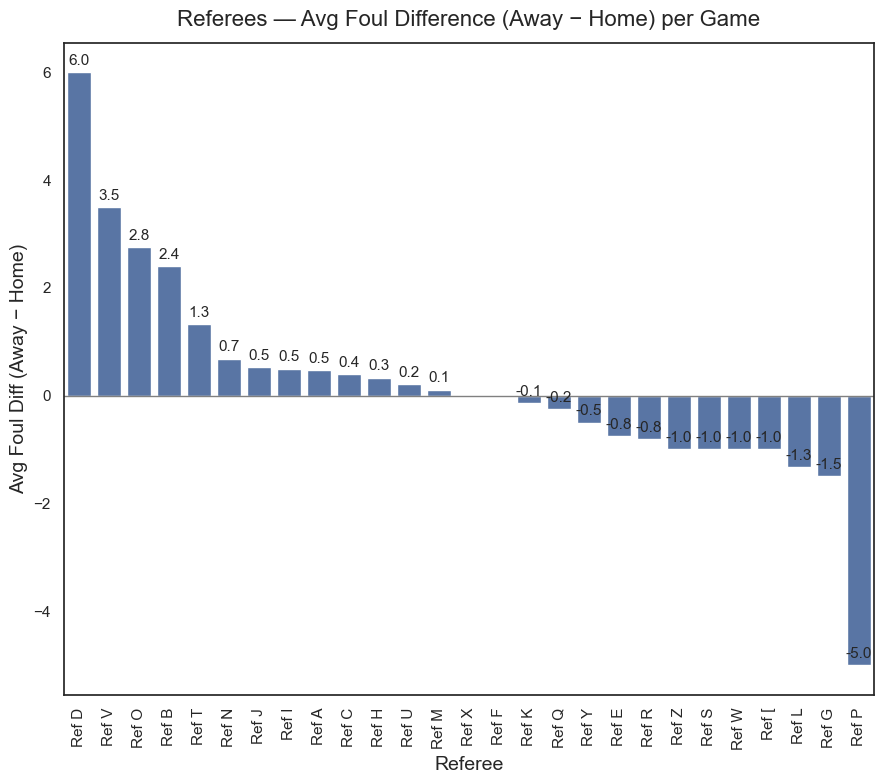
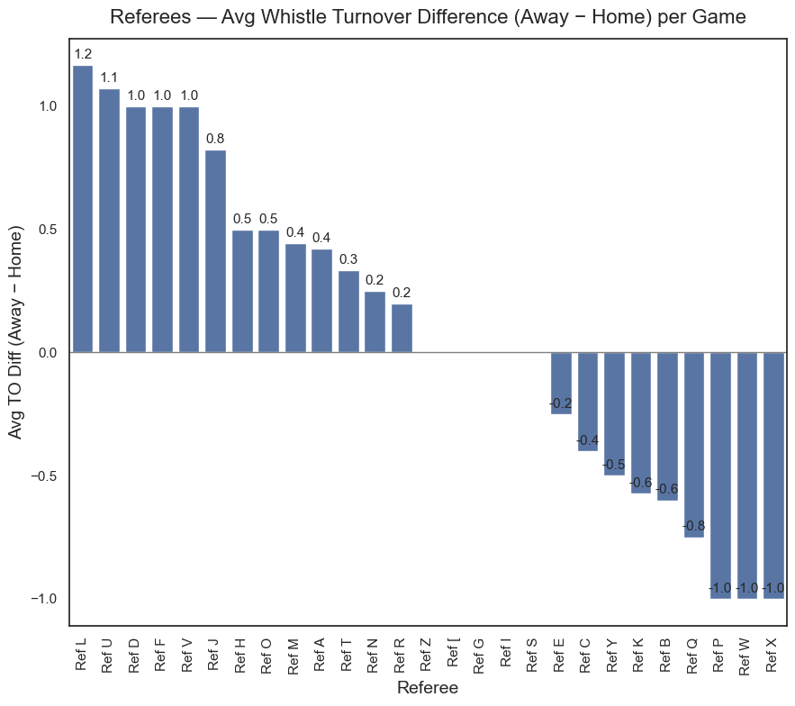
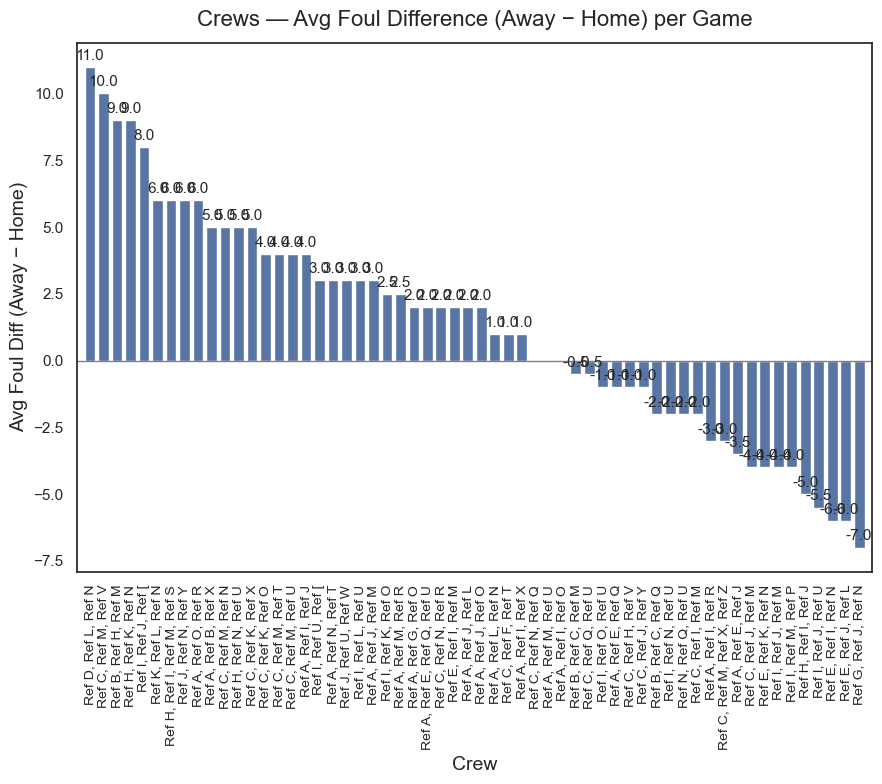
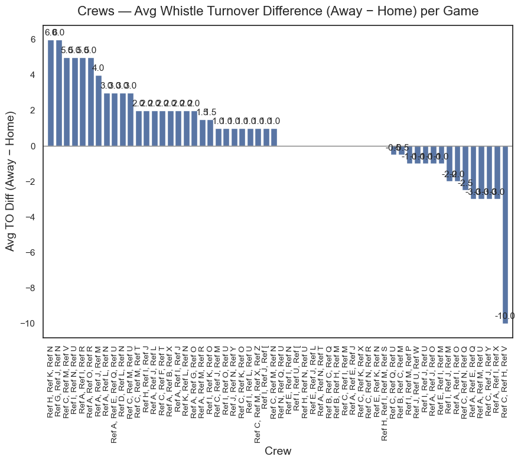
import numpy as np
import seaborn as sns
import matplotlib.pyplot as plt
sns.set_theme(style="white")
palette = sns.color_palette("crest")
COLOR_OUTLIER = "red"
# ---------- helpers ----------
def get_outliers(df, x_col, y_col, n=10, center=(0.0, 0.0)):
"""Return top-n farthest points from `center` (default neutral 0,0)."""
c = np.array(center, dtype=float)
pts = df[[x_col, y_col]].to_numpy(dtype=float)
dist = np.linalg.norm(pts - c, axis=1)
return df.iloc[dist.argsort()[-n:]]
def annotate_quadrants(ax, x0=0.0, y0=0.0, color="blue", fx=0.45, fy=0.45, fs=9):
"""Place quadrant labels inside each quadrant, relative to (x0,y0)."""
ax.axvline(x0, ls="--", lw=1, color="gray", zorder=0)
ax.axhline(y0, ls="--", lw=1, color="gray", zorder=0)
xlo, xhi = ax.get_xlim(); ylo, yhi = ax.get_ylim()
xR = x0 + fx*(xhi - x0); xL = x0 - fx*(x0 - xlo)
yT = y0 + fy*(yhi - y0); yB = y0 - fy*(y0 - ylo)
box = dict(boxstyle="round,pad=0.3", fc="white", ec="none", alpha=0.8)
ax.text(xR, yT, "More fouls & more TOs on AWAY\n(strict on away)",
ha="center", va="center", fontsize=fs, color=color, bbox=box, clip_on=False)
ax.text(xL, yT, "Fewer fouls on AWAY, more TOs on AWAY\n(turnover-heavy on away)",
ha="center", va="center", fontsize=fs, color=color, bbox=box, clip_on=False)
ax.text(xR, yB, "More fouls on AWAY, fewer TOs on AWAY\n(foul-heavy on away)",
ha="center", va="center", fontsize=fs, color=color, bbox=box, clip_on=False)
ax.text(xL, yB, "Fewer fouls & fewer TOs on AWAY\n(lenient on away)",
ha="center", va="center", fontsize=fs, color=color, bbox=box, clip_on=False)
def label_outliers(ax, df, x_col, y_col, id_col, dx_frac=0.00, dy_frac=0.02, color="black", fs=9):
"""Label points just BELOW each outlier dot (axis-relative offset)."""
xlo, xhi = ax.get_xlim(); ylo, yhi = ax.get_ylim()
dx = dx_frac * (xhi - xlo); dy = dy_frac * (yhi - ylo)
for _, r in df.iterrows():
ax.text(r[x_col] + dx, r[y_col] - dy, str(r[id_col]),
ha="center", va="top", fontsize=fs, color=color, clip_on=False)
# --------------- INDIVIDUAL REFEREES ---------------
out_refs = get_outliers(ref_summary,
'avg_foul_diff_away_home',
'avg_turnover_diff_away_home',
n=5, center=(0.0, 0.0))
plt.figure(figsize=(8,6))
sns.scatterplot(data=ref_summary,
x='avg_foul_diff_away_home', y='avg_turnover_diff_away_home',
size='games_officiated', sizes=(30, 300),
alpha=0.8, color=palette[2], legend=False)
sns.scatterplot(data=out_refs,
x='avg_foul_diff_away_home', y='avg_turnover_diff_away_home',
size='games_officiated', sizes=(30, 300),
alpha=0.95, color=COLOR_OUTLIER, legend=False)
annotate_quadrants(plt.gca(), x0=0.0, y0=0.0, fx=0.45, fy=0.45, fs=9)
label_outliers(plt.gca(), out_refs,
'avg_foul_diff_away_home', 'avg_turnover_diff_away_home',
'ref_label', dy_frac=0.025, fs=9)
plt.title('Individual Referees:\nAvg Foul vs. Turnover Whistle Difference (Away - Home) per Game',
fontsize=14, pad=12)
plt.xlabel('Avg Foul Difference (Away - Home) per Game', fontsize=12)
plt.ylabel('Avg Turnover Whistle Difference (Away - Home) per Game', fontsize=12)
plt.grid(False)
plt.show()
# ---------------- REFEREE CREWS ----------------
out_crews = get_outliers(crew_summary,
'avg_foul_diff_per_game', 'avg_to_diff_per_game',
n=5, center=(0.0, 0.0))
plt.figure(figsize=(10,8))
sns.scatterplot(data=crew_summary,
x='avg_foul_diff_per_game', y='avg_to_diff_per_game',
size='games_officiated', sizes=(30, 300),
alpha=0.8, color=palette[3], legend=False)
sns.scatterplot(data=out_crews,
x='avg_foul_diff_per_game', y='avg_to_diff_per_game',
size='games_officiated', sizes=(30, 300),
alpha=0.95, color=COLOR_OUTLIER, legend=False)
annotate_quadrants(plt.gca(), x0=0.0, y0=0.0, fx=0.45, fy=0.45, fs=9)
label_outliers(plt.gca(), out_crews,
'avg_foul_diff_per_game', 'avg_to_diff_per_game',
crew_name_col, dy_frac=0.025, fs=9)
plt.title('Referee Crews:\nAvg Foul vs. Turnover Whistle Difference (Away - Home) per Game',
fontsize=14, pad=12)
plt.xlabel('Avg Foul Difference (Away - Home) per Game', fontsize=12)
plt.ylabel('Avg Turnover Whistle Difference (Away - Home) per Game', fontsize=12)
plt.grid(False)
plt.show()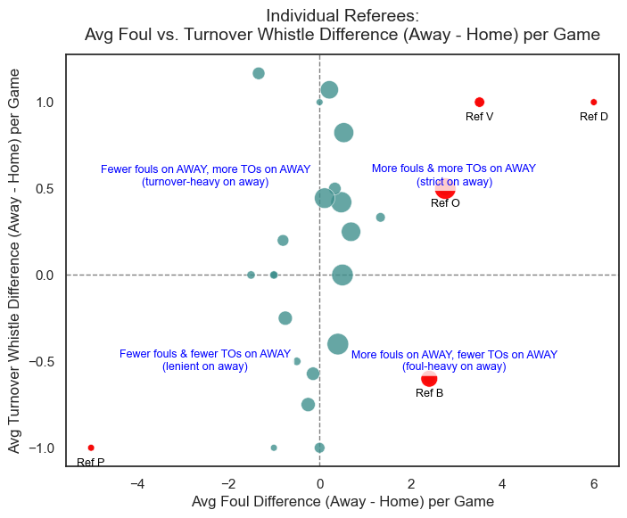
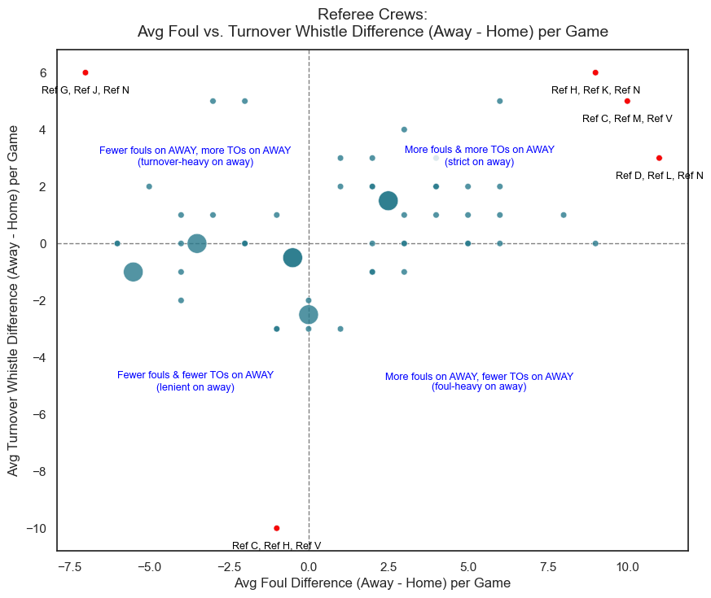
from sklearn.cluster import KMeans
from sklearn.metrics import silhouette_score, calinski_harabasz_score
from sklearn.preprocessing import StandardScaler
from sklearn.decomposition import PCA
import numpy as np
import matplotlib.pyplot as plt
import seaborn as sns
sns.set_theme(style="white")
# Refs ----- features and clustering
ref_features = ref_summary[['ref_label',
'avg_foul_diff_away_home',
'avg_turnover_diff_away_home',
'games_officiated']].copy()
ref_X = ref_features[['avg_foul_diff_away_home',
'avg_turnover_diff_away_home',
'games_officiated']].fillna(0.0)
ref_X_scaled = StandardScaler().fit_transform(ref_X)
# Crews ----- features and clustering
crew_label_col = 'crew_combo' if 'crew_combo' in crew_summary.columns else 'crew_str'
crew_features = crew_summary[[crew_label_col,
'avg_foul_diff_per_game',
'avg_to_diff_per_game',
'games_officiated']].copy()
crew_X = crew_features[['avg_foul_diff_per_game',
'avg_to_diff_per_game',
'games_officiated']].fillna(0.0)
crew_X_scaled = StandardScaler().fit_transform(crew_X)
k_grid = list(range(2, 10))
# Refs ---- - Calinski-Harabasz scores
ref_scores = []
for k in k_grid:
km = KMeans(n_clusters=k, random_state=42, n_init=20)
lbl = km.fit_predict(ref_X_scaled)
ref_scores.append(calinski_harabasz_score(ref_X_scaled, lbl))
# Crews ---- - Calinski-Harabasz scores
crew_scores = []
for k in k_grid:
km = KMeans(n_clusters=k, random_state=42, n_init=20)
lbl = km.fit_predict(crew_X_scaled)
crew_scores.append(calinski_harabasz_score(crew_X_scaled, lbl))
# Plot CH curves as individual plots
chosen_k_ref = 6
chosen_k_crew = 8
# Calinski–Harabasz (Refs)
plt.figure(figsize=(7, 5))
plt.plot(k_grid, ref_scores, marker='o')
ref_ch_at_choice = ref_scores[k_grid.index(chosen_k_ref)]
plt.axvline(chosen_k_ref, ls='--', lw=1, color='gray')
plt.scatter([chosen_k_ref], [ref_ch_at_choice], zorder=3)
plt.text(chosen_k_ref, ref_ch_at_choice,
f' chosen k={chosen_k_ref}\n CH={ref_ch_at_choice:.1f}',
va='bottom', ha='left', fontsize=10)
plt.title('Calinski–Harabasz (Refs)')
plt.xlabel('k'); plt.ylabel('CH score'); plt.grid(False)
plt.tight_layout(); plt.show()
# Calinski–Harabasz (Crews)
plt.figure(figsize=(7, 5))
plt.plot(k_grid, crew_scores, marker='o')
crew_ch_at_choice = crew_scores[k_grid.index(chosen_k_crew)]
plt.axvline(chosen_k_crew, ls='--', lw=1, color='gray')
plt.scatter([chosen_k_crew], [crew_ch_at_choice], zorder=3)
plt.text(chosen_k_crew, crew_ch_at_choice,
f' chosen k={chosen_k_crew}\n CH={crew_ch_at_choice:.1f}',
va='bottom', ha='left', fontsize=10)
plt.title('Calinski–Harabasz (Crews)')
plt.xlabel('k'); plt.ylabel('CH score'); plt.grid(False)
plt.tight_layout(); plt.show()
# Individual Referees --- KMeans clustering
km_ref = KMeans(n_clusters=chosen_k_ref, random_state=42, n_init=20)
ref_features['cluster'] = km_ref.fit_predict(ref_X_scaled)
pca_ref = PCA(n_components=2, random_state=42)
ref_pca = pca_ref.fit_transform(ref_X_scaled)
v1, v2 = pca_ref.explained_variance_ratio_ * 100
plt.figure(figsize=(7.2, 6))
ax = sns.scatterplot(x=ref_pca[:,0], y=ref_pca[:,1],
hue=ref_features['cluster'], palette="tab10",
alpha=0.9, s=70, edgecolor="k", linewidth=0.4, legend=True)
ax.set_title("Referee Clusters (PCA of diff features)")
ax.set_xlabel(f"PCA 1 ({v1:.1f}% var)")
ax.set_ylabel(f"PCA 2 ({v2:.1f}% var)")
ax.grid(False); ax.set_aspect("equal", adjustable="datalim")
ax.legend(title="Cluster", loc="best", frameon=True, framealpha=0.9)
plt.tight_layout(); plt.show()
sil_ref = silhouette_score(ref_X_scaled, ref_features['cluster'])
print(f"[REF] chosen k: {chosen_k_ref} | silhouette: {sil_ref:.3f}")
# Crews --- KMeans clustering
km_crew = KMeans(n_clusters=chosen_k_crew, random_state=42, n_init=20)
crew_features['cluster'] = km_crew.fit_predict(crew_X_scaled)
pca_crew = PCA(n_components=2, random_state=42)
crew_pca = pca_crew.fit_transform(crew_X_scaled)
cv1, cv2 = pca_crew.explained_variance_ratio_ * 100
plt.figure(figsize=(7.2, 6))
ax = sns.scatterplot(x=crew_pca[:,0], y=crew_pca[:,1],
hue=crew_features['cluster'], palette="tab10",
alpha=0.9, s=70, edgecolor="k", linewidth=0.4, legend=True)
ax.set_title("Referee Crew Clusters (PCA of diff features)")
ax.set_xlabel(f"PCA 1 ({cv1:.1f}% var)")
ax.set_ylabel(f"PCA 2 ({cv2:.1f}% var)")
ax.grid(False); ax.set_aspect("equal", adjustable="datalim")
ax.legend(title="Cluster", loc="best", frameon=True, framealpha=0.9)
plt.tight_layout(); plt.show()
sil_crew = silhouette_score(crew_X_scaled, crew_features['cluster'])
print(f"[CREW] chosen k: {chosen_k_crew} | silhouette: {sil_crew:.3f}")c:\Users\amyes\anaconda3\Lib\site-packages\sklearn\cluster\_kmeans.py:1419: UserWarning: KMeans is known to have a memory leak on Windows with MKL, when there are less chunks than available threads. You can avoid it by setting the environment variable OMP_NUM_THREADS=1.
warnings.warn(
c:\Users\amyes\anaconda3\Lib\site-packages\sklearn\cluster\_kmeans.py:1419: UserWarning: KMeans is known to have a memory leak on Windows with MKL, when there are less chunks than available threads. You can avoid it by setting the environment variable OMP_NUM_THREADS=1.
warnings.warn(
c:\Users\amyes\anaconda3\Lib\site-packages\sklearn\cluster\_kmeans.py:1419: UserWarning: KMeans is known to have a memory leak on Windows with MKL, when there are less chunks than available threads. You can avoid it by setting the environment variable OMP_NUM_THREADS=1.
warnings.warn(
c:\Users\amyes\anaconda3\Lib\site-packages\sklearn\cluster\_kmeans.py:1419: UserWarning: KMeans is known to have a memory leak on Windows with MKL, when there are less chunks than available threads. You can avoid it by setting the environment variable OMP_NUM_THREADS=1.
warnings.warn(
c:\Users\amyes\anaconda3\Lib\site-packages\sklearn\cluster\_kmeans.py:1419: UserWarning: KMeans is known to have a memory leak on Windows with MKL, when there are less chunks than available threads. You can avoid it by setting the environment variable OMP_NUM_THREADS=1.
warnings.warn(
c:\Users\amyes\anaconda3\Lib\site-packages\sklearn\cluster\_kmeans.py:1419: UserWarning: KMeans is known to have a memory leak on Windows with MKL, when there are less chunks than available threads. You can avoid it by setting the environment variable OMP_NUM_THREADS=1.
warnings.warn(
c:\Users\amyes\anaconda3\Lib\site-packages\sklearn\cluster\_kmeans.py:1419: UserWarning: KMeans is known to have a memory leak on Windows with MKL, when there are less chunks than available threads. You can avoid it by setting the environment variable OMP_NUM_THREADS=1.
warnings.warn(
c:\Users\amyes\anaconda3\Lib\site-packages\sklearn\cluster\_kmeans.py:1419: UserWarning: KMeans is known to have a memory leak on Windows with MKL, when there are less chunks than available threads. You can avoid it by setting the environment variable OMP_NUM_THREADS=1.
warnings.warn(
c:\Users\amyes\anaconda3\Lib\site-packages\sklearn\cluster\_kmeans.py:1419: UserWarning: KMeans is known to have a memory leak on Windows with MKL, when there are less chunks than available threads. You can avoid it by setting the environment variable OMP_NUM_THREADS=1.
warnings.warn(
c:\Users\amyes\anaconda3\Lib\site-packages\sklearn\cluster\_kmeans.py:1419: UserWarning: KMeans is known to have a memory leak on Windows with MKL, when there are less chunks than available threads. You can avoid it by setting the environment variable OMP_NUM_THREADS=1.
warnings.warn(
c:\Users\amyes\anaconda3\Lib\site-packages\sklearn\cluster\_kmeans.py:1419: UserWarning: KMeans is known to have a memory leak on Windows with MKL, when there are less chunks than available threads. You can avoid it by setting the environment variable OMP_NUM_THREADS=1.
warnings.warn(
c:\Users\amyes\anaconda3\Lib\site-packages\sklearn\cluster\_kmeans.py:1419: UserWarning: KMeans is known to have a memory leak on Windows with MKL, when there are less chunks than available threads. You can avoid it by setting the environment variable OMP_NUM_THREADS=1.
warnings.warn(
c:\Users\amyes\anaconda3\Lib\site-packages\sklearn\cluster\_kmeans.py:1419: UserWarning: KMeans is known to have a memory leak on Windows with MKL, when there are less chunks than available threads. You can avoid it by setting the environment variable OMP_NUM_THREADS=1.
warnings.warn(
c:\Users\amyes\anaconda3\Lib\site-packages\sklearn\cluster\_kmeans.py:1419: UserWarning: KMeans is known to have a memory leak on Windows with MKL, when there are less chunks than available threads. You can avoid it by setting the environment variable OMP_NUM_THREADS=1.
warnings.warn(
c:\Users\amyes\anaconda3\Lib\site-packages\sklearn\cluster\_kmeans.py:1419: UserWarning: KMeans is known to have a memory leak on Windows with MKL, when there are less chunks than available threads. You can avoid it by setting the environment variable OMP_NUM_THREADS=1.
warnings.warn(
c:\Users\amyes\anaconda3\Lib\site-packages\sklearn\cluster\_kmeans.py:1419: UserWarning: KMeans is known to have a memory leak on Windows with MKL, when there are less chunks than available threads. You can avoid it by setting the environment variable OMP_NUM_THREADS=1.
warnings.warn(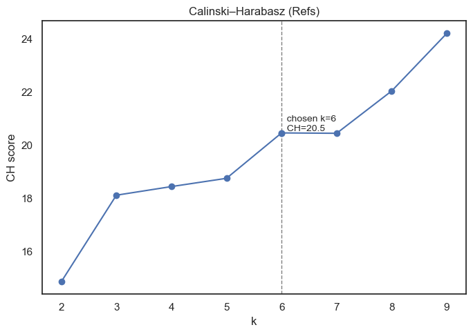
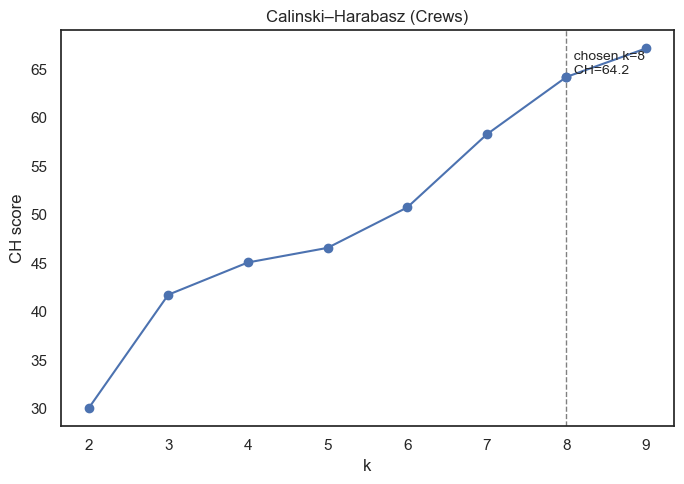
c:\Users\amyes\anaconda3\Lib\site-packages\sklearn\cluster\_kmeans.py:1419: UserWarning: KMeans is known to have a memory leak on Windows with MKL, when there are less chunks than available threads. You can avoid it by setting the environment variable OMP_NUM_THREADS=1.
warnings.warn(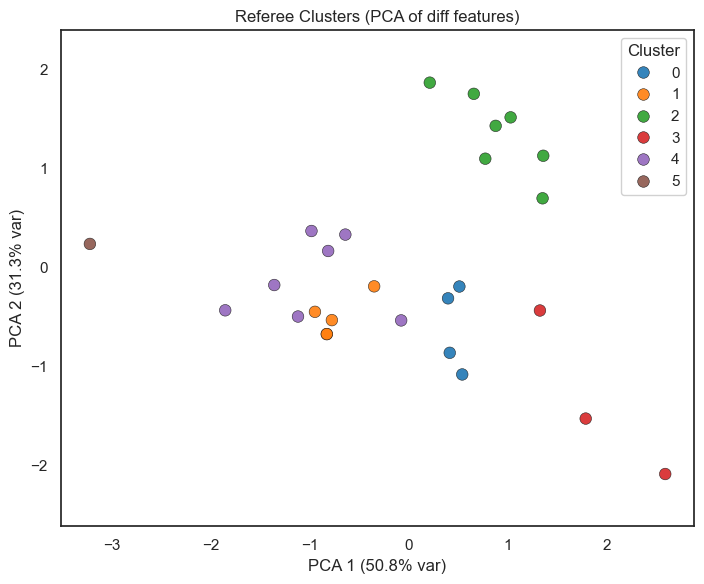
[REF] chosen k: 6 | silhouette: 0.376c:\Users\amyes\anaconda3\Lib\site-packages\sklearn\cluster\_kmeans.py:1419: UserWarning: KMeans is known to have a memory leak on Windows with MKL, when there are less chunks than available threads. You can avoid it by setting the environment variable OMP_NUM_THREADS=1.
warnings.warn(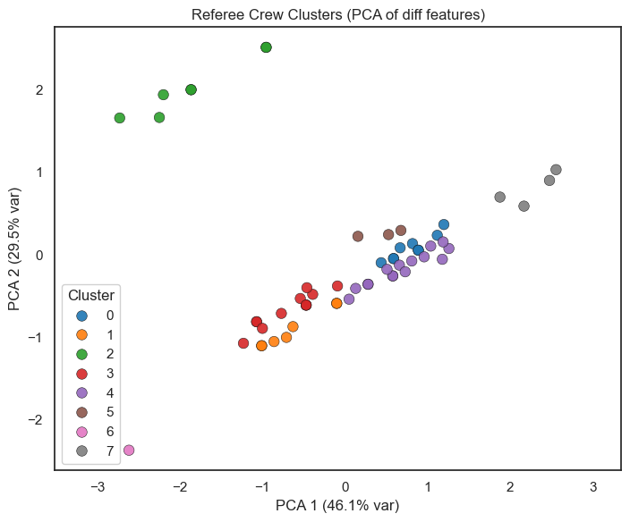
[CREW] chosen k: 8 | silhouette: 0.442import pandas as pd
import numpy as np
# ---- PCA loadings (how each original feature contributes to PC axes)
def print_loadings(pca, feature_names, title):
L = pd.DataFrame(pca.components_, columns=feature_names, index=[f'PC{i+1}' for i in range(pca.n_components_)])
exp = (pca.explained_variance_ratio_ * 100).round(1)
print(f"\n{title} loadings (% var: {list(exp)})")
print(L.round(3))
print_loadings(pca_ref, ['avg_foul_diff_away_home','avg_turnover_diff_away_home','games_officiated'],
"REF PCA")
print_loadings(pca_crew, ['avg_foul_diff_per_game','avg_to_diff_per_game','games_officiated'],
"CREW PCA")
# ---- Per-cluster means and sizes (REFS)
ref_cluster_summary = (
ref_features
.groupby('cluster', as_index=False)[['avg_foul_diff_away_home','avg_turnover_diff_away_home','games_officiated']]
.mean()
.assign(n=lambda d: ref_features.groupby('cluster').size().values)
.sort_values('cluster')
)
print("\nReferee clusters — feature means and sizes")
print(ref_cluster_summary.round(3))
# ---- Per-cluster means and sizes (CREWS)
crew_cluster_summary = (
crew_features
.groupby('cluster', as_index=False)[['avg_foul_diff_per_game','avg_to_diff_per_game','games_officiated']]
.mean()
.assign(n=lambda d: crew_features.groupby('cluster').size().values)
.sort_values('cluster')
)
print("\nCrew clusters — feature means and sizes")
print(crew_cluster_summary.round(3))
REF PCA loadings (% var: [np.float64(50.8), np.float64(31.3)])
avg_foul_diff_away_home avg_turnover_diff_away_home games_officiated
PC1 0.653 0.677 0.339
PC2 -0.320 -0.158 0.934
CREW PCA loadings (% var: [np.float64(46.1), np.float64(29.5)])
avg_foul_diff_per_game avg_to_diff_per_game games_officiated
PC1 0.633 0.599 -0.489
PC2 0.213 0.473 0.855
Referee clusters — feature means and sizes
cluster avg_foul_diff_away_home avg_turnover_diff_away_home \
0 0 0.083 0.750
1 1 -1.060 0.040
2 2 0.417 0.373
3 3 4.083 0.833
4 4 -0.035 -0.667
5 5 -5.000 -1.000
games_officiated n
0 4.000 4
1 2.200 5
2 17.714 7
3 3.667 3
4 5.000 7
5 1.000 1
Crew clusters — feature means and sizes
cluster avg_foul_diff_per_game avg_to_diff_per_game games_officiated n
0 0 2.556 2.556 1.0 9
1 1 0.429 -2.286 1.0 7
2 2 -0.714 -0.214 2.0 7
3 3 -3.583 0.167 1.0 12
4 4 4.867 0.533 1.0 15
5 5 -4.000 5.333 1.0 3
6 6 -1.000 -10.000 1.0 1
7 7 9.000 4.750 1.0 4